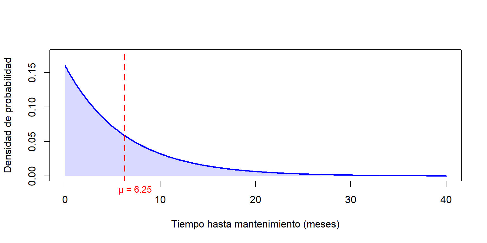
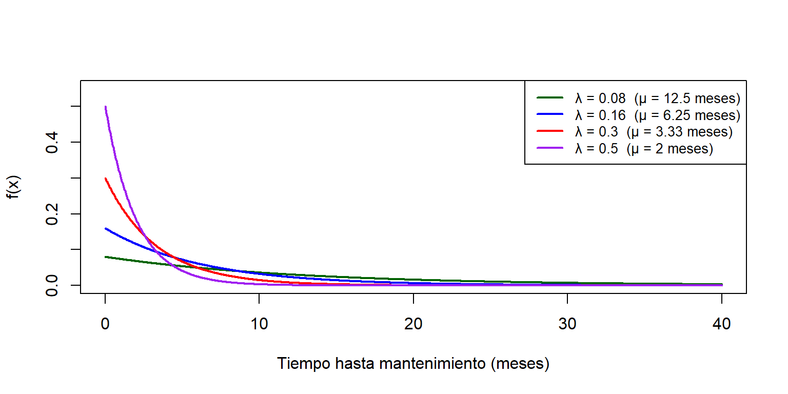
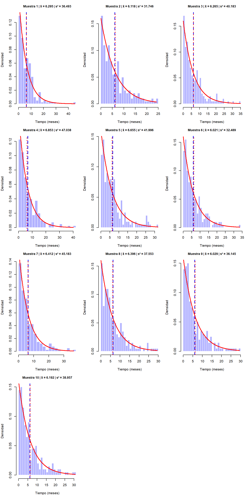
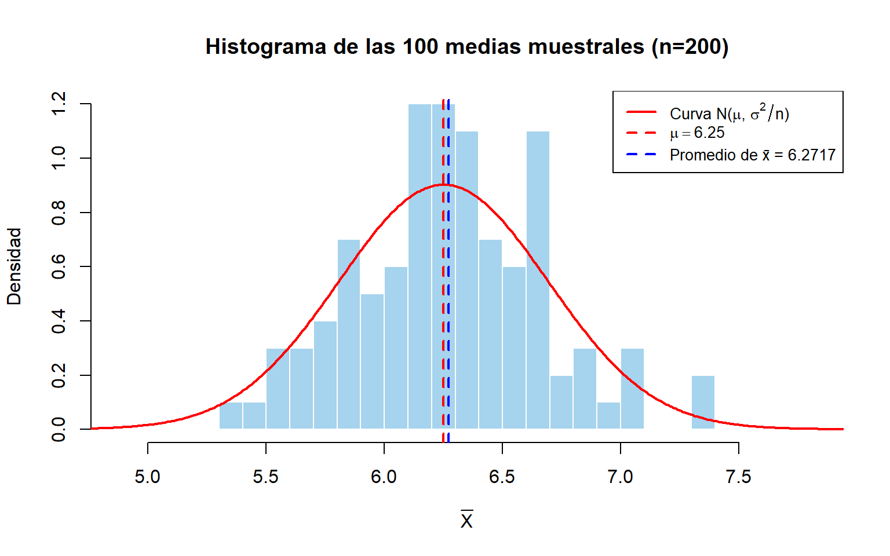
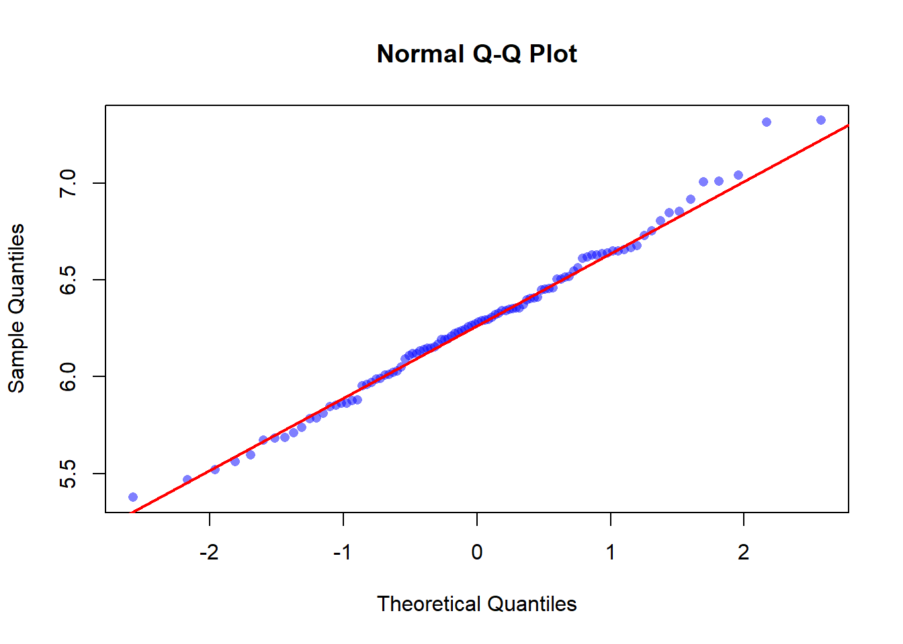
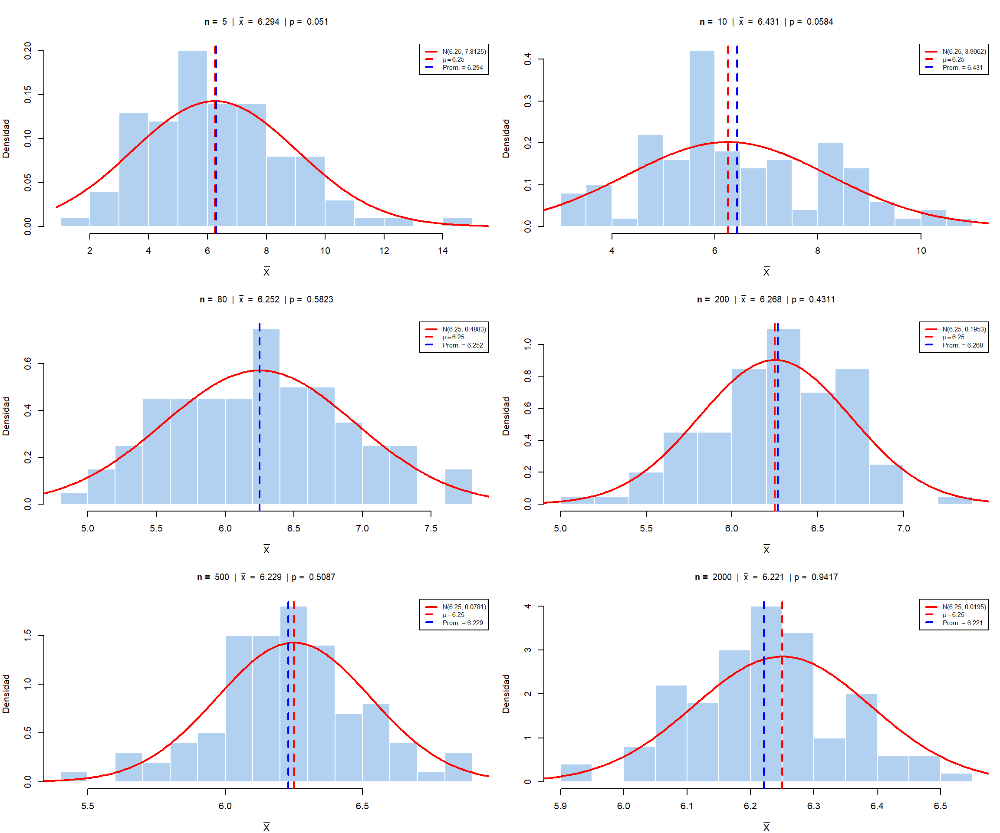
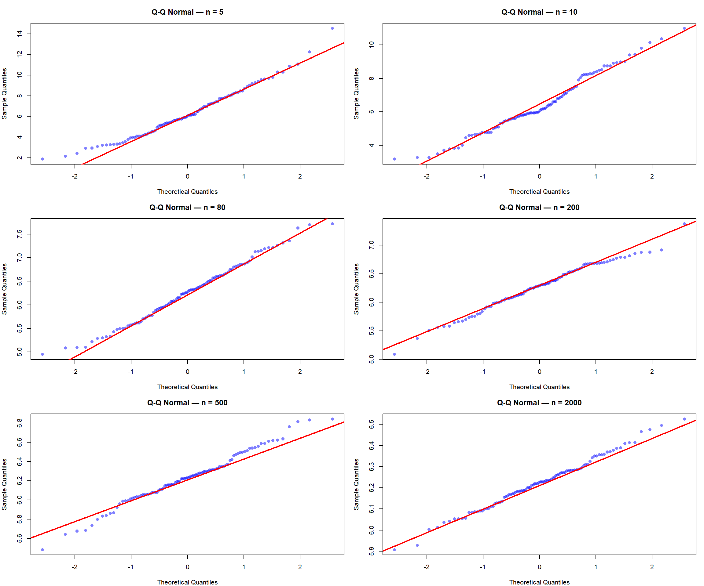
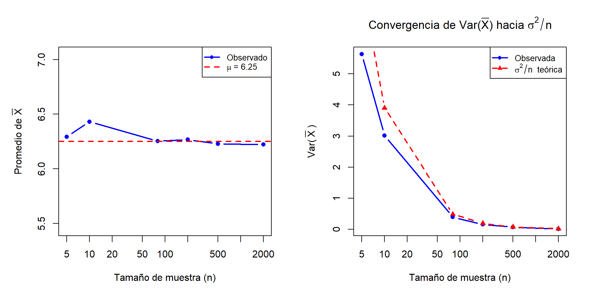

3 Teorema del límite central
3.1 Problema 3
En una planta de fabricación de componentes electrónicos, se modela el tiempo (meses) de funcionamiento continuo de una máquina antes de necesitar mantenimiento mediante una distribución Exponencial. El análisis ha determinado que el tiempo hasta el primer mantenimiento sigue una distribución Exponencial con parámetro \(\lambda = 0.16\).
A continuación, se presentan una serie de actividades para explorar esta distribución y su aplicación en el contexto del mantenimiento predictivo.
3.1.1 Cálculo de la media y varianza de la población
- Determina la media y varianza de la población de los tiempos \(X\) hasta que se requiere mantenimiento de las máquinas en este contexto.
- Interpreta los resultados en relación con el tiempo esperado antes del mantenimiento y la variabilidad en los tiempos.
Sabemos que el tiempo \(X\) (en meses) hasta que una máquina requiere mantenimiento sigue una distribución exponencial con parámetro \(\lambda = 0.16\):
\[X \sim \text{Exp}(\lambda = 0.16)\]
Si \(X \sim \text{Exp}(\lambda)\), la media y varianza están dadas por:
\[\mu = E[X] = \frac{1}{\lambda}, \qquad \sigma^2 = \text{Var}(X) = \frac{1}{\lambda^2}\]
Luego, reemplazando \(\lambda = 0.16\), se sigue que
\[\mu = \frac{1}{0.16} = 6.25 \text{ meses}\] y \[\sigma^2 = \frac{1}{(0.16)^2} = \frac{1}{0.0256} = 39.0625 \text{ meses}^2\] Además, la desviación estándar poblacional es
\[\sigma = \sqrt{39.0625} = 6.25 \text{ meses}\] De lo anterior, podemos afirmar que:
En promedio, cada máquina opera de forma continua durante 6.25 meses antes de requerir su primer mantenimiento. Este valor constituye el punto de referencia para la planificación de mantenimiento preventivo.
La desviación estándar es igual a la media \(\sigma = \mu = 6.25\) meses, lo cual es una propiedad inherente de la distribución exponencial (\(\sigma = \mu = 1/\lambda\)). Esto refleja una alta dispersión en los tiempos de fallo, de modo que, algunas máquinas fallarán mucho antes de los 6.25 meses y otras funcionarán considerablemente más tiempo.
La distribución exponencial es fuertemente asimétrica a la derecha, es decir, la densidad es mayor cerca de 0, lo que implica mayor probabilidad de tiempos pequeños. De hecho, la probabilidad de que una máquina falle antes de la media es:
\[P(X \leq \mu) = 1 - e^{-\lambda \mu} = 1 - e^{-1} \approx 0.6321\]
Es decir, aproximadamente el 63.21% de las máquinas requerirán mantenimiento antes de alcanzar los 6.25 meses.
Por lo tanto, programar el mantenimiento preventivo exactamente a los 6.25 meses resultaría insuficiente, pues cerca de dos tercios de las máquinas ya habrían fallado. Un programa de mantenimiento predictivo eficaz debería considerar esta variabilidad y programar intervenciones antes de la media poblacional.
3.1.2 Gráfico de la curva de densidad
- Grafica la función de densidad de la distribución Exponencial que describe la población.
- Explica cómo el parámetro \(\lambda\) afectan la forma de la curva.
- Interpreta el modelo en relación con el mantenimiento predictivo y la probabilidad de fallos prematuros o tardíos.
La función de densidad de probabilidad (fdp) de una variable \(X \sim \text{Exp}(\lambda)\) de parámetro \(\lambda > 0\) se define como:
\[ f(x) = \left\{ \begin{array}{ll} \lambda \, e^{-\lambda x}, \quad x > 0 \\ 0 , \quad x\leq 0 \\ \end{array} \right. \]
Para \(\lambda = 0.16\), la densidad es \(f(x) = 0.16 , e^{-0.16 x}, \ x \geq 0\). La Figura 3.1 muestra esta curva junto con la media poblacional.

Figure 3.1: Densidad exponencial con λ = 0.16
Para visualizar el efecto del parámetro \(\lambda\), la Figura 3.2 superpone densidades para varios \(\lambda\).

Figure 3.2: Densidad Exponencial para distintos valores de λ
Análisis del parámetro \(\lambda\):
Tasa de ocurrencia (forma): \(\lambda\) determina la rapidez con que decae la densidad. Un \(\lambda\) grande (p. ej., 0.5) concentra la probabilidad cerca de cero, indicando fallos muy tempranos; un \(\lambda\) pequeño (0.08) extiende la cola derecha, haciendo más probables tiempos largos.
Localización y dispersión (escala): El recíproco \(1/\lambda\) es tanto la media como la desviación estándar. Así, \(\lambda\) controla simultáneamente el centro y la variabilidad de la distribución.
Implicaciones para el mantenimiento predictivo:
Para \(\lambda = 0.16\), se obtienen las siguientes probabilidades de interés:
\(P(X \leq 3) = 1 - e^{-0.16 \times 3} = 1 - e^{-0.48} \approx 0.3812\): el 38.12% de las máquinas fallarán antes de los 3 meses.
\(P(X > 12) = e^{-0.16 \times 12} = e^{-1.92} \approx 0.1466\): solo el 14.66% superará el año sin mantenimiento.
Además, la propiedad de falta de memoria de la exponencial implica que la probabilidad de fallo en un intervalo futuro no depende del tiempo acumulado de funcionamiento. Por tanto, una estrategia de mantenimiento basada en la edad (esperar a que la máquina “envejezca”) no es óptima. Lo recomendable es establecer un programa de mantenimiento periódico con intervalos fijos inferiores a la media (por ejemplo, cada 4 o 5 meses), reduciendo así la alta probabilidad de fallos tempranos.
3.1.3 Comparación de parámetros, estimadores y estimaciones
Toma 10 muestras aleatorias de tamaño \(n = 200\) de la población Exponencial de parámetro \(\lambda\) usando la función rexp(n, rate=lambda) de R y establece una semilla como por ejemplo
set.seed(123) para asegurar la reproducibilidad de los resultados. Para cada
muestra:
- Elabora un histograma e interpreta la distribución de los datos.
- Calcula la media y varianza muestral y compara con los valores poblacionales.
- Analiza los siguientes conceptos:
- Parámetros: Identifica los valores poblacionales reales.
- Estimadores: Define las fórmulas utilizadas para estimar los parámetros.
- Estimaciones: Interpreta los valores obtenidos y su relación con las muestras.
Se extraen 10 muestras aleatorias de tamaño \(n = 200\) de la población \(X \sim \text{Exp}(\lambda = 0.16)\).
La Figura 3.3 presenta los histogramas de las 10 muestras, junto con la densidad teórica (rojo) y las medias muestral (azul punteada) y poblacional (roja punteada).

Figure 3.3: Distribución para 10 muestras de tamaño 200
Observación: Todas las muestras reflejan la forma característica de la exponencial: asimetría positiva, alta concentración en valores pequeños y cola larga a la derecha. La densidad teórica se ajusta razonablemente, como cabe esperar con \(n=200\).
La Tabla 3.1 resume las medias y varianzas muestrales, junto con los errores respecto a los valores poblacionales.
| Muestra | x̄ | s² | Error en media | Error en varianza |
|---|---|---|---|---|
| 1 | 6.2952 | 36.4925 | 0.0452 | -2.5700 |
| 2 | 6.1182 | 31.7456 | -0.1318 | -7.3169 |
| 3 | 6.2651 | 40.1833 | 0.0151 | 1.1208 |
| 4 | 6.8534 | 47.0376 | 0.6034 | 7.9751 |
| 5 | 6.6550 | 41.9957 | 0.4050 | 2.9332 |
| 6 | 6.0208 | 32.4892 | -0.2292 | -6.5733 |
| 7 | 6.4115 | 45.1826 | 0.1615 | 6.1201 |
| 8 | 6.3959 | 37.5532 | 0.1459 | -1.5093 |
| 9 | 6.0295 | 36.1454 | -0.2205 | -2.9171 |
| 10 | 6.1916 | 38.9570 | -0.0584 | -0.1055 |
Las medias muestrales fluctúan alrededor de \(\mu = 6.25\) y las varianzas muestrales alrededor de \(\sigma^2 = 39.0625\). Ninguna muestra reproduce exactamente los valores poblacionales, pero los promedios de los estadísticos muestrales se aproximan a los parámetros reales, lo cual es consistente con la propiedad de insesgadez de estos estimadores.
Los parámetros son valores fijos (pero generalmente desconocidos) que caracterizan a la distribución poblacional. En este problema:
| Parámetro | Símbolo | Valor |
|---|---|---|
| Tasa de fallo | \(\lambda\) | \(0.16\) |
| Media poblacional | \(\mu = 1/\lambda\) | \(6.25\) meses |
| Varianza poblacional | \(\sigma^2 = 1/\lambda^2\) | \(39.0625\) meses\(^2\) |
Los parámetros son constantes que describen la totalidad de la población y no dependen de ninguna muestra particular.
Los estimadores son funciones de las observaciones muestrales \((X_1, X_2, \ldots, X_n)\) que se utilizan para aproximar los parámetros poblacionales. Son variables aleatorias (su valor cambia de muestra a muestra).
| Parámetro | Estimador | Fórmula |
|---|---|---|
| \(\mu\) | Media muestral \(\bar{X}\) | \(\displaystyle \bar{X} = \frac{1}{n}\sum_{i=1}^{n} X_i\) |
| \(\sigma^2\) | Varianza muestral \(S^2\) | \(\displaystyle S^2 = \frac{1}{n-1}\sum_{i=1}^{n}(X_i - \bar{X})^2\) |
Propiedades importantes:
- \(\bar{X}\) es un estimador insesgado de \(\mu\): \(\quad E[\bar{X}] = \mu\)
- \(S^2\) es un estimador insesgado de \(\sigma^2\): \(\quad E[S^2] = \sigma^2\)
Las estimaciones son los valores numéricos concretos que se obtienen al evaluar los estimadores en una muestra particular. Son números fijos para cada muestra.
| Muestra | \(\bar{x}\) | Error \(\bar{x} - \mu\) | \(s^2\) | Error \(s^2 - \sigma^2\) |
|---|---|---|---|---|
| 1 | 6.2952 | 0.0452 | 36.4925 | -2.5700 |
| 2 | 6.1182 | -0.1318 | 31.7456 | -7.3169 |
| 3 | 6.2651 | 0.0151 | 40.1833 | 1.1208 |
| 4 | 6.8534 | 0.6034 | 47.0376 | 7.9751 |
| 5 | 6.6550 | 0.4050 | 41.9957 | 2.9332 |
| 6 | 6.0208 | -0.2292 | 32.4892 | -6.5733 |
| 7 | 6.4115 | 0.1615 | 45.1826 | 6.1201 |
| 8 | 6.3959 | 0.1459 | 37.5532 | -1.5093 |
| 9 | 6.0295 | -0.2205 | 36.1454 | -2.9171 |
| 10 | 6.1916 | -0.0584 | 38.9570 | -0.1055 |
Las 10 muestras generan estimaciones diferentes para los mismos parámetros, lo cual ilustra la variabilidad muestral. Sin embargo, al ser \(\bar{X}\) y \(S^2\) estimadores insesgados, el promedio de las estimaciones tiende a los valores poblacionales conforme aumenta el número de muestras, verificando empíricamente la propiedad de insesgadez.
3.1.4 Aplicación del Teorema del Límite Central para \(n = 200\)
- Genera 100 muestras de tamaño \(n = 200\) de la población Exponencial.
- Calcula la media muestral de cada muestra y elabora un histograma de las 100 medias muestrales.
- Obtén el promedio y la varianza de estas 100 medias muestrales.
- Aplica un test de normalidad (\(\alpha = 0.05\)) a las 100 medias muestrales e interpreta los resultados.
- Explica cómo se evidencia el Teorema del Límite Central en el comportamiento
de las medias muestrales, considerando:
- Distribución de las medias muestrales.
- Comparación de la media y varianza muestral con las esperadas.
El Teorema del Límite Central (TLC) establece que si \(X_1, X_2, \ldots, X_n\) son variables aleatorias independientes e idénticamente distribuidas con media \(\mu\) y varianza \(\sigma^2 < \infty\), entonces la distribución de la media muestral estandarizada converge en distribución a una normal estándar conforme \(n \to \infty\):
\[\frac{\bar{X} - \mu}{\sigma / \sqrt{n}} \xrightarrow{d} N(0,\, 1)\]
o equivalentemente, para \(n\) grande, \(\bar{X}\) se distribuye aproximadamente como:
\[\bar{X} \;\dot\sim\; N\!\left(\mu,\; \frac{\sigma^2}{n}\right)\]
La primera expresión es el enunciado formal del TLC, donde el límite es una distribución fija (\(N(0,1)\)) que no depende de \(n\). La segunda es una convención práctica ampliamente utilizada que indica la distribución aproximada de \(\bar{X}\) para un \(n\) fijo suficientemente grande (véase Casella & Berger, Statistical Inference, 2nd ed., Teorema 5.5.14).
Para nuestra población \(X \sim \text{Exp}(\lambda = 0.16)\), los valores teóricos esperados para la distribución de \(\bar{X}\) con \(n = 200\) son:
\[E[\bar{X}] = \mu = \frac{1}{\lambda} = 6.25\]
\[\text{Var}(\bar{X}) = \frac{\sigma^2}{n} = \frac{1/\lambda^2}{n} = \frac{39.0625}{200} = 0.1953125\]
Generamos las 100 muestras y calculamos las medias muestrales. Es importante señalar que se utilizan \(B = 100\) réplicas, lo cual es adecuado para una ilustración pedagógica del TLC, pero introduce variabilidad apreciable en las estimaciones de segundo orden (como la varianza de las medias). Con \(B = 100\), el error estándar relativo de la varianza empírica es del orden de \(\sqrt{2/(B-1)} \approx 14\%\), por lo que discrepancias del \(15\)-\(25\%\) entre la varianza observada y la teórica son esperables y no invalidan el análisis.
La Figura 3.4 muestra el histograma de las 100 medias muestrales, junto con la curva normal teórica \(N(6.25, 0.1953)\).

Figure 3.4: Distribución de los promedios de las 100 muestras
La Tabla 3.3 compara los estadísticos observados con los valores teóricos del TLC.
| Concepto | Valor Obtenido | Valor Teórico (TLC) | Error | Expresión TLC |
|---|---|---|---|---|
| Media de \(\bar{X}\) | 6.2717 | 6.2500 | 0.0217 | \(E[\bar{X}] = \mu\) |
| Varianza de \(\bar{X}\) | 0.1528 | 0.1953 | -0.0425 | \(\text{Var}(\bar{X}) = \sigma^2/n\) |
Ahora aplicaremos un test de normalidad. En este punto es necesario aclarar que en el contexto de este ejercicio, el objetivo del test de normalidad no es verificar si los datos originales siguen una distribución normal, ya que se sabe teóricamente que \(X \sim \text{Exp}(\lambda)\) la cual es una distribución claramente no normal y asimétrica.
El propósito del test es evaluar empíricamente si la distribución de la media muestral obtenida mediante simulación es compatible con una distribución normal, tal como predice el Teorema del Límite Central.
El test aplicado es el test de Shapiro-Wilk, ya que es uno de los procedimientos más potentes para detectar desviaciones de la normalidad en muestras pequeñas o moderadas (\(n \leq 5000\)). Las hipótesis son:
\[H_0: \text{Las medias muestrales provienen de una distribución normal}\] \[H_1: \text{Las medias muestrales NO provienen de una distribución normal}\]
El estadístico del test se basa en la correlación entre los datos ordenados y los valores esperados de una muestra normal.
Para este test la regla de decisión: establece que si el valor \(p \geq \alpha = 0.05\), no se rechaza \(H_0\). Los resultados se muestran en la Tabla 3.4.
| Concepto | Resultado |
|---|---|
| Estadístico W | 0.9922 |
| Valor \(p\) | 0.8347 |
| Nivel de significancia \(\alpha\) | 0.05 |
En el experimento se obtuvo un valor p = 0.8347. Dado que p > 0.05, no existe evidencia estadística suficiente para rechazar la hipótesis nula de normalidad. Es importante interpretar correctamente este resultado:
El test no demuestra que la distribución sea normal.
El resultado solo indica que los datos observados son compatibles con una distribución normal.
Este resultado es consistente con la predicción del Teorema del Límite Central, según la cual la distribución de las medias muestrales debe aproximarse a una normal.
Es importante tener en cuenta que en estudios relacionados con el Teorema del Límite Central, los tests formales de normalidad deben interpretarse con cautela por dos razones:
Baja potencia para muestras pequeñas: cuando el número de simulaciones es limitado, el test puede no detectar desviaciones moderadas de la normalidad.
Alta sensibilidad para muestras muy grandes: con tamaños muestrales muy grandes, el test puede detectar desviaciones irrelevantes desde el punto de vista práctico.
Por esta razón, el análisis gráfico mediante histogramas o Q–Q plots suele considerarse un complemento importante del test formal.
El gráfico Q-Q de la Figura 3.5 complementa la evaluación visual de normalidad.

Figure 3.5: Q-Q de las 100 medias muestrales
A pesar de que la población original es fuertemente asimétrica, el histograma de las medias muestrales (Figura 3.4) es aproximadamente simétrico y acampanado, asemejándose a una normal.
El promedio de las 100 medias (\(\bar{\bar{x}} \approx 6.2717\)) es muy cercano a \(\mu = 6.25\), confirmando la insesgadez. La varianza observada (\(0.1528\)) es próxima al valor teórico \(0.1953\); la discrepancia (aproximadamente un \(22\%\)) es esperable con solo \(B = 100\) réplicas, como se discutió anteriormente.
El p-valor = 0.8347 es muy superior a 0.05, por lo que no se rechaza \(H_0\). Además, el gráfico Q-Q muestra una alineación casi perfecta de los puntos con la recta teórica, indicando que la distribución de las medias es consistente con una normal.
Con \(n=200\), la aproximación normal es excelente, como cabría esperar incluso para una distribución tan asimétrica como la exponencial.
3.1.5 Aplicación del Teorema del Límite Central variando \(n\)
- Repite el análisis anterior extrayendo 100 muestras de cada uno de los siguientes tamaños: \(n = 5, 10, 80, 200, 500\) y \(2{,}000\).
- Para cada tamaño de muestra \(n\):
- Calcula el promedio y la varianza de las 100 medias muestrales.
- Elabora un histograma de las 100 medias muestrales.
- Aplica un test de normalidad (\(\alpha = 0.05\)) y discute los resultados.
- Concluye sobre la relación entre el tamaño muestral y la validez del Teorema del
Límite Central, analizando:
- Comportamiento de la distribución de las medias muestrales.
- Convergencia de la media y varianza muestral hacia los valores teóricos.
Según el TLC, para \(n\) grande, \(\bar{X}\) se distribuye aproximadamente como \(N(\mu, \sigma^2/n)\). A medida que \(n\) aumenta, la aproximación mejora y la varianza decrece:
\[\frac{\bar{X} - \mu}{\sigma/\sqrt{n}} \xrightarrow{d} N(0, 1) \qquad \Longrightarrow \qquad \bar{X} \;\dot\sim\; N\!\left(6.25,\; \frac{39.0625}{n}\right)\]
A medida que \(n\) crece:
- La media de las medias muestrales converge a \(\mu = 6.25\).
- La varianza de las medias muestrales converge a \(\sigma^2/n\), que decrece con \(n\).
- La forma de la distribución de \(\bar{X}\) se aproxima cada vez más a una normal.
Generaremos muestras y cálculo de medias muestrales para cada \(n\). La Tabla 3.5 resume los resultados para los diferentes tamaños muestrales.
| n | Promedio x̄ | Var(x̄) obs. | Var(x̄) teórica | Error media | Error varianza | W | p-valor | Decisión |
|---|---|---|---|---|---|---|---|---|
| 5 | 6.2944 | 5.6364 | 7.8125 | 0.0444 | -2.1761 | 0.9747 | 0.0510 | No se rechaza H₀ |
| 10 | 6.4313 | 3.0202 | 3.9062 | 0.1813 | -0.8860 | 0.9754 | 0.0584 | No se rechaza H₀ |
| 80 | 6.2525 | 0.3985 | 0.4883 | 0.0025 | -0.0898 | 0.9890 | 0.5823 | No se rechaza H₀ |
| 200 | 6.2676 | 0.1587 | 0.1953 | 0.0176 | -0.0366 | 0.9869 | 0.4311 | No se rechaza H₀ |
| 500 | 6.2293 | 0.0685 | 0.0781 | -0.0207 | -0.0096 | 0.9880 | 0.5087 | No se rechaza H₀ |
| 2000 | 6.2215 | 0.0144 | 0.0195 | -0.0285 | -0.0051 | 0.9940 | 0.9417 | No se rechaza H₀ |
Los histogramas de las 100 medias para cada \(n\) se muestran en la Figura 3.6, y los correspondientes gráficos Q-Q en la Figura 3.7.

Figure 3.6: Histogramas para varios valores de n
Los gráficos Q-Q (quantile-quantile) permiten evaluar visualmente si la distribución de las medias muestrales se aproxima a una normal. En cada gráfico, los cuantiles observados de las 100 medias (para un tamaño de muestra \(n\) dado) se representan frente a los cuantiles teóricos de una distribución normal estándar. Si la distribución empírica es aproximadamente normal, los puntos deberían alinearse sobre la recta roja \(y = x\).

Figure 3.7: Q-Q plots para varios valores de n
Finalmente, la Figura 3.8 ilustra cómo el promedio y la varianza de las medias convergen a los valores teóricos al aumentar \(n\).

Figure 3.8: Convergencia del promedio de medias muestrales
Podemos hacer el siguiente análisis:
Para \(n = 5\): El histograma conserva una marcada asimetría positiva. El test de Shapiro-Wilk arroja un p-valor = 0.0510, extremadamente cercano al umbral de \(\alpha = 0.05\). Formalmente no se rechaza \(H_0\), pero este resultado es frágil: un cambio mínimo en la semilla o en la muestra podría invertir la decisión. Esta fragilidad es consistente con el hecho de que, con \(B = 100\) medias de solo \(n = 5\) observaciones de una distribución altamente asimétrica, la aproximación normal es claramente insuficiente. El gráfico Q-Q muestra una curvatura evidente que confirma esta conclusión. En este caso, el análisis gráfico resulta más informativo que la decisión binaria del test, cuya potencia es limitada con muestras de este tamaño.
Para \(n = 10\): La asimetría disminuye ligeramente; el p-valor = 0.0584 sigue siendo no significativo, pero el Q-Q aún presenta desviaciones. La aproximación normal es marginal.
Para \(n = 80\): El histograma es ya aproximadamente simétrico y acampanado; el p-valor = 0.5823 es holgadamente no significativo y el Q-Q muestra buena alineación. La transición hacia la normalidad es clara.
Para \(n = 200\): La distribución es prácticamente normal (p = 0.4311), con Q-Q casi perfecto. La varianza observada (0.1587) se acerca a la teórica (0.1953).
Para \(n = 500\) y \(n = 2000\): La normalidad es excelente. Los p-valores son altos (0.5087 y 0.9417), los histogramas son estrechos y simétricos, y los Q-Q plots muestran puntos perfectamente alineados. La varianza observada converge a \(\sigma^2/n\).
Por otra parte, la Figura 3.8 muestra cómo el promedio de las medias se estabiliza alrededor de \(\mu = 6.25\) (errores que tienden a cero) y cómo la varianza observada sigue de cerca la curva teórica \(\sigma^2/n\), que decrece proporcionalmente a \(1/n\).
En conclusión, el análisis empírico confirma plenamente el Teorema del Límite Central. Conforme aumenta \(n\), la distribución de \(\bar{X}\) converge a una normal en tres aspectos simultáneos: forma (de asimétrica a simétrica y acampanada), centrado (\(E[\bar{X}] \to \mu\)) y dispersión (\(\text{Var}(\bar{X}) \to \sigma^2/n\)). Para la distribución exponencial con \(\lambda = 0.16\), se requiere un tamaño de muestra de al menos \(n \approx 80\) para obtener una aproximación normal razonable; con \(n \geq 200\) la aproximación es excelente y prácticamente indistinguible de la normalidad.